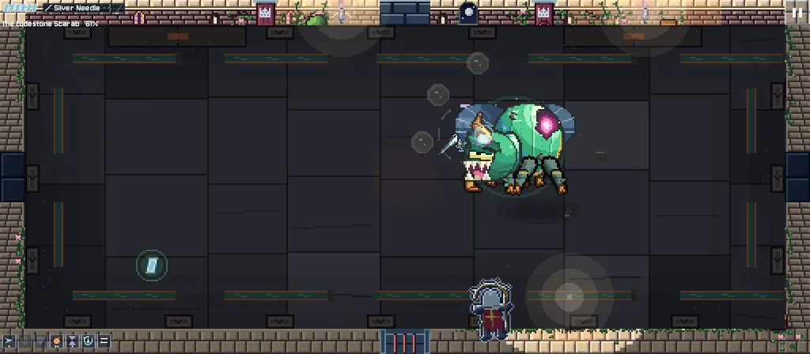

SILVERWAKE
A Gothic bullet-hell roguelite for one thumb. Read every attack. Dodge. Strike.
Learn them. Then silence them.
Every attack warns you first, by a pose or a mark on the floor. Pick a boss to watch it fight and see how its attacks read. All footage is from the game.
30 more bosses wait behind false walls, and one beyond the last Guardian. The switch above shows them.
Try the controls
Drag anywhere and the Vanguard flies that way, faces that way, and fires by itself. Everything else is a tap.
A small sketch of how the Vanguard handles, against a training bell. It is not the game itself.
- Drag to fly and aim
- Quick tap to dash
- Tap toward the bell, up close, to strike
- Two fingers together to parry
With a mouse: drag to fly, click to dash or strike, right-click to parry. With keys: arrows or WASD to fly, Space to dash or strike, P to parry. Your gun fires by itself.
Eleven guns, two at a time
Change either one free at any Lantern Dock, and swap between them mid-fight. No gun uses ammunition.
Better with two
Bring a friend into your run: two phones, the same room on both screens, a Vanguard each. No internet, no server, no account.
Same Wi-Fi or a hotspot
One phone hosts and the other joins, by the list of nearby games or a join code. A friend can even fly into the room you are in, mid-fight.
Stand each other up
A downed ship is a wreck, not a death. Hover beside it for 3 seconds and your friend is back, with less hull each time.
Your own build
Each of you keeps your own guns, melee weapon, armour, skills and rewards, and you both earn full XP. Enemies get tougher, with no extra bullets.
One Full Game covers two
A host who owns it brings their guest along to every sector.
The night that did not end
The abbey kept a vigil over its dead for one night each, then lantern-bearers carried each soul out along the moon's silver road to the sea. One night, the vigil was never allowed to end. Ten great bells hold that night in place, and each is kept by a Guardian who refuses to let go. You are the last lantern-bearer. Silence the bells. Let the dead go home.
Four people are still awake in the abbey. Stop beside them and they talk. Follow them far enough and they change how it ends.
What you do
Explore
Ten haunted sectors, each room with its own goal, omen or trap. Press on the walls: secret rooms hide secret bosses.
Fight your way
Two guns, a melee weapon, a Parry that cuts bullets out of the air, and abilities on wall buttons. Twelve modifiers change how your gun behaves.
Keep what you learn
Lantern Docks save your run and refill your hull. XP buys permanent skills. A fall sends you back to your last dock, not the start.
Hear the story, or don't
Ten great bells hold one night in place. People wait along the way if you stop to listen, and how far you follow them helps choose your ending. It never interrupts a fight.
Play together
Two phones on the same Wi-Fi or a hotspot, with no internet needed. See it.
Play your way
Plays offline with no account. Text up to 200%, reduced motion and flashes, high-contrast threats, gentle mode and battery saver.
In the game



Free to start
The first three sectors are free, with their Guardians and hidden lairs. One optional Full Game purchase opens the other seven and removes adverts. Optional cosmetic packs change only how your Vanguard looks. No subscriptions, no energy, no paid power.
Support the game
SILVERWAKE is made by one developer. If you enjoy it, you can send a BitCoffee.

Buy Me BitCoffee
Or send Bitcoin directly to this address:
bc1qud62yu6pfgsx6suz99tjvtgxcfe2j5shp4ssdg